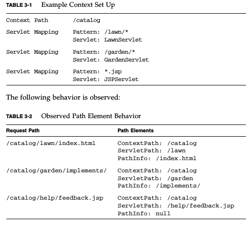

There are two main recommendations to protect your cookies against various threats. In both cases you need to configure some properties in your web.xml file, inside the <session-config> element. The properties are:
E.g. a sample section from a web.xml file that sets both properties would be the following:
<session-config>
<cookie-config>
<secure>true</secure>
<http-only>true</http-only>
</cookie-config>
</session-config>
I've never encountered any problems with http-only but secure can lead to hard to diagnose problems if the server doesn't provide https or if there's something wrong with the certificates. In one particular case the server's refusal to send a cookie over an unsecure connection caused my filter code to enter into an infinite loop and I encountered the following (not helpful at all) message at my browser:
Setting <secure>false</secure> or simply removing
the secure element altogether fixed that problem.
The HttpServletRequest class includes the following related methods:
The following image shows their usage:

getServletContext().getInitParameter("email");
getServletConfig().getInitParameter("name");